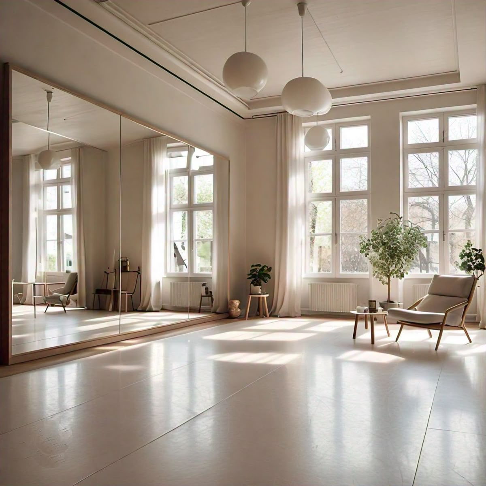

Individualios konsultacijos ir grupinės praktikos
Grupinės praktikos
Kūrybinis užsiėmimas, kuriame piešiame teptukais arba rankomis, naudodami guašą ir didelio formato lapus.
Praktikos metu pažyngsniui kuriame gyvenimo situacijos ar konkrečių santykių atvaizdą. Mokomės reikšti ir vadovautis savo jausmais.
Jokia meninė patirtis nebūtina – pakanka noro.
GRUPINĖS PRAKTIKOS
Praktika kviečianti tyrinėti save per fizinį judesį, intuityvų šokį ir inscenizuotas gyvenimo situacijas.
Užsięmimų metu mokomes atpažinti ir suprasti savo emocijas / kūno poreikius / autentiškas savybes.
Jokios specialios šokių patirties nereikia – pakanka noro.
INDIVIDUALIAI SITUACIJAI PRITAIKYTA KONSULTACIJA
Sesija jungianti pokalbį ir inscenizuota kūrybinę improvizaciją. Formatas leidžia iš šalies pamatyti savo gyvenimo situaciją.
Gali vykti asmeniškai (veiksmas vyksta naudojant objektus) arba grupėje (siūlomoje situacijoje dalyvauja kiti žmonės).

Svarbu: Negydau diagnozuotų psichikos sutrikimų. Jei turite diagnozuotą depresiją ar kitą sutrikimą – rekomenduoju kreiptis pas klinikinį specialistą.